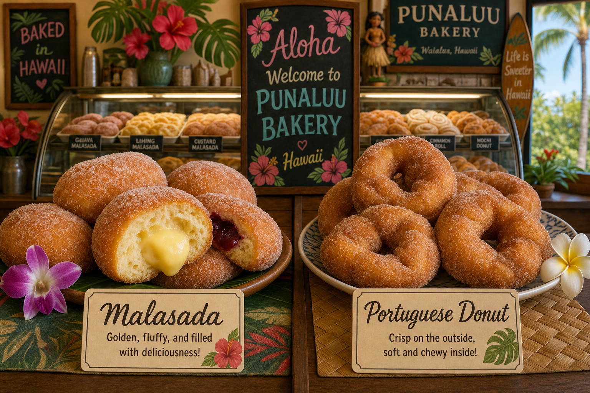

A Tale of Two Doughnuts
Ask any local in Hawaii what a malasada is, and they'll describe a warm, sugar-coated ball of fried dough — crispy outside, pillowy inside, best eaten seconds after leaving the oil. Ask a Portuguese person in Lisbon what a bola de berlim is, and they'll describe the same thing. Yet these two pastries, despite sharing the same ancestor, have evolved into distinctly different experiences.
The Portuguese Roots
Malasadas — the word means "poorly cooked" or "half-baked" in Portuguese, a humorous reference to the uneven browning common in traditional home frying — were brought to Hawaii by Portuguese immigrants in the 1800s. The original recipe used flour, eggs, sugar, butter, yeast, and a small amount of evaporated milk — simple pantry ingredients that were available in the islands.
What Makes Hawaiian Malasadas Different
Hawaiian malasadas, as refined over 150 years of island baking, tend to be:
- Slightly denser and chewier than their Portuguese cousins
- More generously sized — Hawaiian hospitality in dough form
- Often filled with localized flavors: haupia (coconut custard), lilikoi (passion fruit), guava, taro
- Best consumed immediately — they're a fresh product, not a shelf item
What Makes Portuguese Bolas de Berlim Different
The Portuguese version, named after the Berlin doughnuts that inspired them, tend to be lighter and airier, usually filled with ovos moles (egg cream) or whipped cream, and often cut open to receive the filling rather than injected after frying. They're found across mainland Portugal, Madeira, and the Azores.
Which Is Better?
This is not a question we'll answer — that's like asking whether surfing is better in Pipe or Rincon. They're both great in their context. What we will say is that a fresh Lehua malasada on a Kona morning, filled with haupia cream and rolled in cinnamon sugar, is one of the finest things you can eat on this Earth. Come try one and form your own opinion.